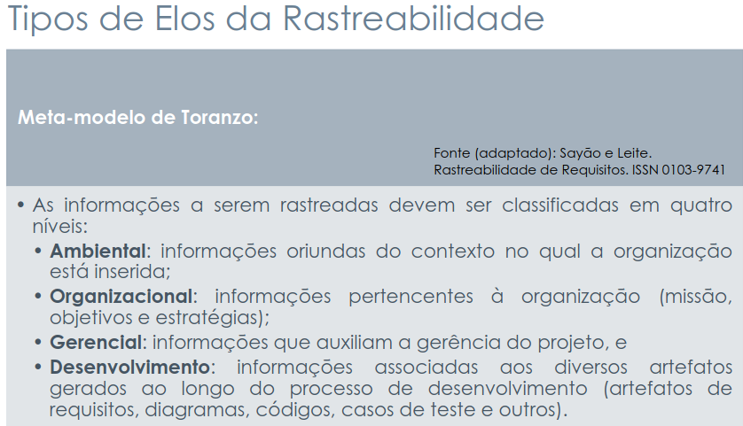
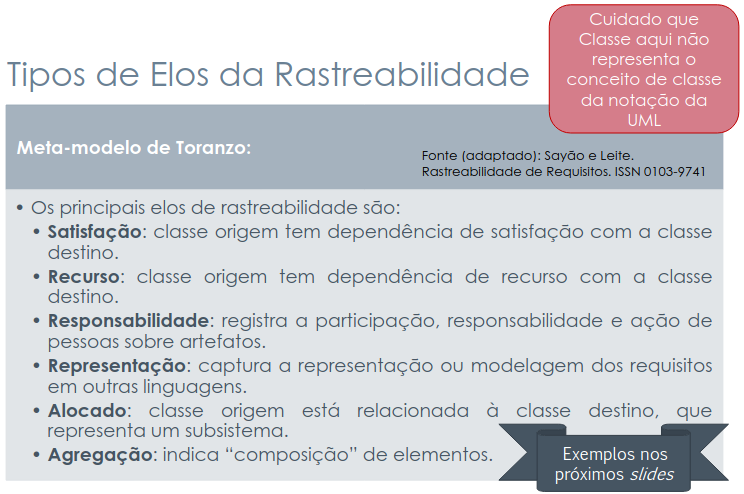

Backward-From
Introdução
A rastreabilidade Backward-From (ou rastreabilidade para trás) é uma abordagem que permite identificar a origem de cada requisito dentro de um projeto. Ela busca responder à pergunta “por que este requisito existe?”, estabelecendo uma ligação entre os requisitos atuais e suas fontes de elicitação, como entrevistas, documentos, ou necessidades dos indivíduos.
Em outras palavras, ela garante que nenhum requisito seja implementado sem uma justificativa clara, permitindo compreender o contexto e o motivo de sua criação. Essa prática é fundamental para manter a consistência, a transparência e o controle sobre as decisões tomadas durante o desenvolvimento do sistema.
Integrantes do Grupo
A Tabela 1 apresenta todos os integrantes da equipe que participaram da etapa da Histórias de Usuário, juntamente com a descrição das atividades que cada um desenvolveu durante o projeto.
| Nome | Quais etapas participou |
|---|---|
| Arthur Guilherme | Adição dos backward-From: BF43, BF44, BF45, BF46, BF49, BF50, BF51, BF59 e BF64. Além da criação dos elos do mesmo intervalo ELOBF43, ELOBF44, ELOBF45, ELOBF46, ELOBF49, ELOBF50, ELOBF51, ELOBF59 e ELOBF64 |
| Arthur Henrique | Adição dos backward-From: BF03, BF04, BF05, BF16, BF20, BF25, BF26, BF29, BF58 e BF63. |
| Felipe Guimaraes | Adição dos backward-From: BF07, BF08, BF09, BF10, BF12, BF17, BF27, BF54 e BF62. Além da criação dos elos do mesmo intervalo ELOBF07, ELOBF08, ELOBF09, ELOBF10, ELOBF12, ELOBF17, ELOBF27, ELOBF54 e ELOBF62 |
| João Felipe | Adição dos backward-from BF14, BF23, BF30, BF37, BF41, BF42, BF47, BF53 e BF55, além da criação dos elos do mesmo intervalo ELOBF14, ELOBF23, ELOBF30, ELOBF37, ELOBF41, ELOBF42, ELOBF47, ELOBF53 e ELOBF55. |
| João Sapiência | Adição dos backward-From: BF24, BF31, BF32, BF33, BF36, BF39 e BF48; criação dos elos: ELOBF24, ELOBF31, ELOBF32, ELOBF33, ELOBF36, ELOBF39 e ELOBF48. Correção e padronização de links nas Tabelas 2 e 4. |
| Tiago Lemes | Criação do documento de Backward-From e adição dos backward-From: BF06, BF15, BF18, BF19, BF21, BF22, BF34, BF35, BF52 e BF56. Além da criação dos elos do mesmo intervalo ELOBF06, ELOBF15, ELOBF18, ELOBF19, ELOBF21, ELOBF22, ELOBF34, ELOBF35, ELOBF52 e ELOBF56 |
| Vilmar José | Adição dos backward-From: BF01, BF02, BF11, BF13, BF28, BF38, BF40, BF60, BF61, BF65. Além da criação dos elos do mesmo intervalo ELOBF01, ELOBF02, ELOBF11, ELOBF13, ELOBF28, ELOBF38, ELOBF40, ELOBF60, ELOBF61, ELOBF65. |
Metodologia
A metodologia adotada para esta análise baseia-se no Meta-modelo de Toranzo, conforme apresentado nos slides da aula “Requisitos – Aula 26”, de Milene Serrano e Maurício Serrano, disponíveis clicando aqui.
Esse modelo organiza as informações rastreáveis em níveis hierárquicos e define elos que representam as relações entre os artefatos envolvidos no desenvolvimento de sistemas.
Níveis de Informação
Nesta análise, o foco está no nível de Desenvolvimento, um dos quatro níveis principais do modelo, conforme apresentado na Figura 1:
- Ambiental
- Organizacional
- Gerencial
- Desenvolvimento

No contexto da rastreabilidade Backward-From, o objetivo é conectar cada requisito à sua origem, permitindo rastrear de onde ele veio e qual necessidade ou decisão o motivou.
Essa abordagem ajuda a compreender o propósito de cada requisito e a garantir a consistência entre as fontes de elicitação e os requisitos documentados.
Elos de Rastreabilidade
Para modelar as conexões entre os requisitos e suas origens, foram utilizados os elos de rastreabilidade definidos no modelo de Toranzo, conforme apresentado na Figura 2:
- Satisfação: Conecta um requisito (artefato de origem) a qualquer outro artefato de destino (como outro requisito, história de usuário, componente ou módulo) que seja necessário para cumprir, implementar ou atender a esse requisito.
- Recurso: Conecta um requisito a um dado, serviço ou funcionalidade da qual ele depende para funcionar corretamente.
- Responsabilidade: Conecta um requisito ao ator, componente ou módulo responsável por sua criação ou definição.
- Representação: Conecta um requisito à sua origem ou forma de especificação em outro artefato.
- Alocado: Conecta um requisito a um artefato de planejamento que indica de onde ele foi derivado ou relacionado.
- Agregação: Conecta um requisito a outro do qual ele faz parte ou que o complementa, formando uma funcionalidade mais ampla.

Cada elo é aplicado conforme a natureza da relação entre os requisitos e os elementos que lhes dão origem.
A aplicação prática dessa metodologia é apresentada em uma tabela de mapeamento, que relaciona os requisitos às suas respectivas fontes e artefatos de elicitação, indicando o tipo de elo utilizado em cada caso.
Essa abordagem permite verificar se todos os requisitos têm origem bem definida, mantendo a coerência entre as etapas de elicitação e documentação e facilitando o controle da rastreabilidade ao longo do projeto.
Legenda
Serão utilizados as seguintes legendas das tabelas:
- RFx: Requisito Funcional número x;
- RNFx: Requisito Não Funcional número x;
- ELOBFx: Elo do Backward-From número x;
- BFx: Backward from número x.
Backward-From
Requisitos Funcionais
Na tabela 2 encontra-se a rastreabilidade Backward-From dos Requisitos Funcionais.
| ID | Requisito | Descrição | Rastreabilidade | Implementado | Elo Relacionado |
|---|---|---|---|---|---|
| BF01 | RF01 | O sistema deve identificar cada indivíduo (aluno, monitor, professor, coordenador, diretor, administrador). | Análise de Documento | Sim | ELOBF01 |
| BF02 | RF02 | O sistema deve ter perfil individual. | Análise de Documento | Sim | ELOBF02 |
| BF03 | RF03 | Deve mapear conceitos relacionados ao conteúdo, respeitando a hierarquia da Teoria da Aprendizagem Significativa (TAS). | Análise de Documento | Sim | ELOBF03 |
| BF04 | RF04 | O sistema deve agregar o processo formal de avaliação (Plano de Ensino) com o ambiente virtual. | Análise de Documento | Sim | ELOBF04 |
| BF05 | RF05 | Deve integrar a avaliação docente com as inferências do SAE. | Análise de Documento | Sim | ELOBF05 |
| BF06 | RF06 | O assistente virtual deve combinar resultados formais com inferências Fuzzy. | Análise de Documento | Sim | ELOBF06 |
| BF07 | RF07 | A interface deve conter o progresso do aluno na disciplina toda | Brainstorming | Sim | ELOBF07 |
| BF08 | RF08 | A interface deve exibir um progresso em porcentagem do andamento da disciplina | Brainstorming | Não | ELOBF08 |
| BF09 | RF09 | A interface deve exibir como está a porcentagem de acertos das atividades de cada conteúdo | Brainstorming | Não | ELOBF09 |
| BF10 | RF10 | A interface deve exibir como está a porcentagem de erros das atividades de cada conteúdo | Brainstorming | Não | ELOBF10 |
| BF11 | RF11 | A interface deve exibir a média geral da turma em cada atividade. | Brainstorming | Não | ELOBF11 |
| BF12 | RF12 | A interface deve exibir a média do indivíduo após a atividade | Brainstorming | Sim | ELOBF12 |
| BF13 | RF13 | O aluno deve escolher o tempo em que deseja receber alertas sobre atividades atrasadas. | Brainstorming | Não | ELOBF13 |
| BF14 | RF14 | O aluno pode marcar os tópicos da disciplina no qual ele sente mais facilidade | Brainstorming | Não | ELOBF14 |
| BF15 | RF15 | O sistema deve enviar notificações para lembrar o aluno de revisar conteúdos passados. | Brainstorming | Não | ELOBF15 |
| BF16 | RF16 | O sistema deve ter um índice de conteúdos ordenado pela porcentagem de erros em cada conteúdo. | Brainstorming | Não | ELOBF16 |
| BF17 | RF17 | O sistema deve possuir vídeo aula | Brainstorming | Sim | ELOBF17 |
| BF18 | RF18 | O sistema deve pedir ao indivíduo a melhor forma de caminho de notificação. | Entrevista | Não | ELOBF18 |
| BF19 | RF19 | O sistema deve enviar uma notificação quando está chegando perto da data de entrega de uma atividade. | Entrevista | Não | ELOBF19 |
| BF20 | RF20 | O aluno escolhe quando ele recebe a notificação de proximidade da data de entrega de atividade. | Entrevista | Não | ELOBF20 |
| BF21 | RF21 | O sistema deve fornecer dados e informações analíticas em diferentes níveis (individual, turma, entre turmas). | Análise de Documento | Sim | ELOBF21 |
| BF22 | RF22 | As análises devem ser em tempo real e apresentadas em gráficos (barra, coluna, linha, pizza). | Análise de Documento | Sim | ELOBF22 |
| BF23 | RF23 | Deve mostrar como o desempenho está sendo calculado. | Análise de Documento | Não | ELOBF23 |
| BF24 | RF24 | O sistema deve permitir a criação e organização de questões interativas para apoiar o ensino-aprendizagem. | Brainstorming | Não | ELOBF24 |
| BF25 | RF25 | Deve promover a interação dos alunos com as questões, avaliando seu conhecimento informativo e formativo. | Análise de Documento | Sim | ELOBF25 |
| BF26 | RF26 | O SAE deve fornecer assistência para professores neste módulo. | Análise de Documento | Sim | ELOBF26 |
| BF27 | RF27 | O SAE deve fornecer assistência para alunos neste módulo. | Análise de Documento | Sim | ELOBF27 |
| BF28 | RF28 | O sistema deve conter um banco de questões geradas pelo professor. | Brainstorming | Sim | ELOBF28 |
| BF29 | RF29 | O banco de questões do sistema deve conter questões de outras origens. | Brainstorming | Não | ELOBF29 |
| BF30 | RF30 | O sistema deve direcionar cada aluno a materiais adequados à sua situação cognitiva e preferências. | Análise de Documento | Sim | ELOBF30 |
| BF31 | RF31 | Os materiais devem estar postados em tópicos de conteúdos separados na disciplina. | Análise de Documento | Não | ELOBF31 |
| BF32 | RF32 | O banco de questões deve estar separado por conteúdo. | Brainstorming | Não | ELOBF32 |
| BF33 | RF33 | O sistema deve integrar outros softwares educacionais (como AVAs). | Análise de Documento | Não | ELOBF33 |
| BF34 | RF34 | A integração deve reduzir o esforço de professores e monitores, centralizando informações sobre atividades e desempenho. | Análise de Documento | Sim | ELOBF34 |
| BF35 | RF35 | O sistema deve criar um personagem antropomórfico para interação direta com o estudante. | Análise de Documento | Sim | ELOBF35 |
| BF36 | RF36 | A interação deve visar a compreensão da situação de aprendizagem. | Análise de Documento | Não | ELOBF36 |
| BF37 | RF37 | A inferência deve envolver Lógica Fuzzy, permitindo avaliações graduais (ex.: "bom", "razoável", "fraco"). | Análise de Documento | Sim | ELOBF37 |
| BF38 | RF38 | O assistente virtual deve ser visível na interface. | Brainstorming | Sim | ELOBF38 |
| BF39 | RF39 | O assistente virtual deve ser customizável pelo aluno. | Brainstorming | Não | ELOBF39 |
| BF40 | RF40 | O assistente virtual deve sugerir questões com o conteúdo da vídeo aula. | Brainstorming | Sim | ELOBF40 |
| BF41 | RF41 | O assistente virtual deve notificar qual conteúdo o aluno está tendo mais dificuldade | Brainstorming | Não | ELOBF41 |
| BF42 | RF42 | O assistente virtual deve notificar o professor da disciplina com que parte do conteúdo os alunos estão tendo mais dificuldade | Brainstorming | Sim | ELOBF42 |
| BF43 | RF43 | O sistema deve facilitar a interação entre monitores, professores e alunos. | Análise de Documento | Sim | ELOBF43 |
| BF44 | RF44 | Deve fornecer chat síncrono para interação a distância. | Análise de Documento | Sim | ELOBF44 |
| BF45 | RF45 | O assistente virtual deve acompanhar interações | Análise de Documento | Sim | ELOBF45 |
| BF46 | RF46 | O assistente virtual deve fornecer dados relevantes ao indivíduo (progresso do aluno) | Análise de Documento | Sim | ELOBF46 |
| BF47 | RF47 | Deve disponibilizar informações sobre horários e locais de monitoria. | Análise de Documento | Sim | ELOBF47 |
| BF48 | RF48 | O assistente virtual deve fornecer orientação pedagógica individualizada, baseada na TAS e no desejo didático dos docentes. | Análise de Documento | Não | ELOBF48 |
| BF49 | RF49 | O assistente virtual deve analisar a situação cognitiva de cada aluno e atuar como agente colaborativo na aprendizagem. | Análise de Documento | Não | ELOBF49 |
| BF50 | RF50 | O sistema deve apresentar ao professor qual aluno sabe sobre o conteúdo | Entrevista | Não | ELOBF50 |
| BF51 | RF51 | O sistema deve apresentar ao professor qual aluno possui um comportamento adequado (entrega de atividades, presença na aula) | Entrevista | Não | ELOBF51 |
Requisitos Não-Funcionais
Na tabela 3 encontra-se a rastreabilidade Backward-From dos Requisitos Não-Funcionais.
| ID | Requisito | Descrição | Rastreabilidade | Implementado | Elo Relacionado |
|---|---|---|---|---|---|
| BF52 | RNF01 | A interface deve se adaptar automaticamente ao perfil de cada indivíduo (aluno, monitor, professor, etc.). | Análise de Documento | Sim | ELOBF52 |
| BF53 | RNF02 | O sistema deve ser acessível pela internet, presencial ou a distância. | Análise de Documento | Sim | ELOBF53 |
| BF54 | RNF03 | O ambiente deve ter tempo de resposta de até 1 segundo para todos os perfis de indivíduos. | Análise de Documento | Sim | ELOBF54 |
| BF55 | RNF04 | Deve se basear na extensão de um Sistema Tutor Inteligente (STI) para um Assistente Virtual de Ensino Inteligente (ITA). | Análise de Documento | Sim | ELOBF55 |
| BF56 | RNF05 | Deve empregar recursos tecnológicos alinhados à Teoria da Aprendizagem Significativa (TAS). | Análise de Documento | Sim | ELOBF56 |
| BF57 | RNF06 | Projeto multidisciplinar envolvendo Educação, Psicologia e Informática. | Análise de Documento | Sim | ELOBF57 |
| BF58 | RNF07 | As análises do módulo MAD devem ser realizadas em tempo real. | Análise de Documento | Sim | ELOBF58 |
| BF59 | RNF08 | O sistema deve garantir que os dados dos estudantes sejam armazenados de forma segura e criptografada. | Entrevista | Sim | ELOBF59 |
| BF60 | RNF09 | O sistema deve estar disponível 24 horas por dia, 7 dias por semana, com tempo de indisponibilidade máximo de 1% ao mês. | Entrevista | Sim | ELOBF60 |
| BF61 | RNF10 | O tempo de resposta para carregamento de dashboards e gráficos deve ser inferior a 3 segundos. | Entrevista | Sim | ELOBF61 |
| BF62 | RNF11 | O sistema deve ser compatível com dispositivos móveis (responsividade). | Entrevista | Não | ELOBF62 |
| BF63 | RNF13 | O sistema deve possibilitar integração com outros AVAs e sistemas educacionais externos. | Entrevista | Não | ELOBF63 |
| BF64 | RNF14 | O sistema deve permitir escalabilidade para atender um número crescente de alunos e módulos sem perda de desempenho. | Entrevista | Sim | ELOBF64 |
| BF65 | RNF15 | O sistema deve garantir a privacidade dos dados dos estudantes em conformidade com a LGPD. | Entrevista | Sim | ELOBF65 |
| BF66 | RNF12 | O sistema deve seguir padrões de acessibilidade para garantir usabilidade a todos os indivíduos. | Entrevista | Não | ELOBF66 |
Elos de Rastreabilidade (Backward-From)
A tabela 4 apresenta os elos de rastreabilidade Backward-From para os requisitos selecionados.
Cada elo descreve como o requisito é rastreado para trás, conectando-o à sua origem na elicitação — como entrevistas, documentos ou necessidades dos utilizadores — e demonstrando o motivo de sua existência no sistema.
| ID - Elo | ID - Backward-From | Tipo de Vínculo | Descrição do Elo |
|---|---|---|---|
| ELOBF01 | BF01 | Responsabilidade | Este elo formaliza que o requisito RF01 foi derivado da necessidade de distinguir papéis institucionais (aluno, professor, monitor, etc.), sendo responsabilidade da camada de autenticação e controle de acesso. |
| ELOBF02 | BF02 | Agregação | Este elo define que o requisito RF02 agrega as funcionalidades de personalização de perfil, refletindo a diferenciação de papéis identificada em RF01. |
| ELOBF06 | BF06 | Representação | Este elo formaliza que o requisito RF06, que define a combinação de resultados formais com inferências Fuzzy, é representado pela funcionalidade de análise inteligente de dados educacionais. |
| ELOBF07 | BF07 | Satisfação | Este elo formaliza que o requisito RF07 foi derivado da necessidade de visualização do progresso do aluno, identificada durante a sessão de Brainstorming, satisfazendo a demanda por acompanhamento contínuo. |
| ELOBF08 | BF08 | Satisfação | Este elo formaliza que o requisito RF08 surgiu da necessidade de quantificar o progresso, identificada na sessão de Brainstorming, satisfazendo a demanda por uma métrica clara de avanço. |
| ELOBF09 | BF09 | Satisfação | Este elo formaliza que o requisito RF09 originou-se da necessidade de detalhar o desempenho por conteúdo, identificada na sessão de Brainstorming, satisfazendo a demanda por feedback específico sobre acertos. |
| ELOBF10 | BF10 | Satisfação | Este elo formaliza que o requisito RF10 originou-se da necessidade de identificar dificuldades específicas por conteúdo, identificada na sessão de Brainstorming, satisfazendo a demanda por feedback sobre erros. |
| ELOBF11 | BF11 | Satisfação | Este elo formaliza que o requisito RF11 é satisfeito pela necessidades de professores, alunos e monitores no acompanhamento coletivo do desempenho, garantindo transparência nas métricas da turma. |
| ELOBF12 | BF12 | Satisfação | Este elo formaliza que o requisito RF12 foi derivado da necessidade de feedback imediato após a conclusão de atividades, identificada na sessão de Brainstorming, satisfazendo a demanda do aluno por resultados rápidos. |
| ELOBF13 | BF13 | Recurso | Este elo estabelece que o requisito RF13 depende do módulo de notificações configuráveis, compartilhado com RF18 e RF19, permitindo personalização dos alertas. |
| ELOBF14 | BF14 | Representação | Este elo formaliza que o requisito RF14, responsável pelo aluno poder indicar que disciplinas percebe como mais fáceis, representa uma forma de captura e modelagem das percepções subjetivas dele sobre seu próprio desempenho, materializando a necessidade de (se) entender o perfil cognitivo-acadêmico do aluno. |
| ELOBF15 | BF15 | Recurso | Este elo estabelece que o requisito RF15, responsável pelo envio de notificações de revisão de conteúdos, depende do recurso de notificação compartilhado com os requisitos RF18 e RF19. |
| ELOBF17 | BF17 | Satisfação | Este elo formaliza que o requisito RF17 surgiu da sugestão de incluir recursos multimídia, identificada na sessão de Brainstorming, satisfazendo a demanda por diferentes formatos de aprendizado. |
| ELOBF18 | BF18 | Recurso | Este elo define que o requisito RF18, que solicita a escolha do caminho de notificação preferido pelo beneficiário, depende do módulo de configuração de notificações, recurso essencial ao funcionamento de RF15. |
| ELOBF19 | BF19 | Recurso | Este elo estabelece que o requisito RF19, que envia notificações sobre prazos de entrega de atividades, utiliza o mesmo recurso de notificação definido por RF15. |
| ELOBF21 | BF21 | Agregação | Este elo define que o requisito RF21, responsável pela disponibilização de dados analíticos em diferentes níveis, agrega as funcionalidades de análise e visualização definidas em RF22. |
| ELOBF22 | BF22 | Representação | Este elo representa o requisito RF22, que detalha a forma de exibição dos dados analíticos em gráficos, como uma manifestação visual da análise descrita em RF21. |
| ELOBF23 | BF23 | Representação | Este elo formaliza a representação do requisito RF23, que determina que o sistema deve detalhar para o aluno os (seus) cálculos de desempenho acadêmico, como representação visual e explicativa dos dados analíticos já capturados. |
| ELOBF27 | BF27 | Satisfação | Este elo formaliza que o requisito RF27 foi derivado da necessidade de suporte específico aos alunos, identificada na Análise de Documento, satisfazendo a demanda por assistência direcionada. |
| ELOBF28 | BF28 | Representação | Este elo define que o requisito RF28 representa a materialização do recurso “banco de questões” proposto nos brainstormings, para apoiar professores na criação e gestão de avaliações. |
| ELOBF30 | BF30 | Agregação | Este elo formaliza que o requisito RF30, que determina o direcionamento sob medida de materiais aos alunos conforme a sua situação cognitivo-acadêmica e (as) suas preferências, agrega as seguintes funcionalidades: análise de desempenho (RF07, RF08, RF09, RF10, RF11, RF12, RF21, RF22, RF23), preferências do indivíduo (RF14), e gestão de atividades (RF24, RF25, RF26, RF27, RF28, RF29). |
| ELOBF34 | BF34 | Agregação | Este elo formaliza que o requisito RF34, que visa reduzir o esforço de professores e monitores por meio da centralização de informações, agrega funcionalidades relacionadas ao desempenho (RF07, RF08, RF09, RF10, RF11, RF12, RF21, RF22, RF23, RF46, RF50, RF51) e às atividades (RF04, RF24, RF25, RF26, RF27, RF28, RF29, RF30, RF32, RF43, RF44). |
| ELOBF35 | BF35 | Representação | Este elo representa que o requisito RF35, que define a criação de um personagem antropomórfico, é a materialização visual e interativa do assistente virtual, agregando valor à interface e à experiência do aluno. |
| ELOBF37 | BF37 | Recurso | Este elo formaliza que o requisito RF37, determinando o uso da lógica fuzzy nas inferências pelo sistema, é um recurso técnico fundamental que sustenta (é uma dependência tecnológica de) outros requisitos relacionados à análise inteligente de dados, como RF06, RF49 e RF50. |
| ELOBF38 | BF38 | Representação | Este elo formaliza que o requisito RF38 expressa a necessidade de visibilidade do assistente virtual na interface, representando sua presença constante no ambiente de aprendizagem. |
| ELOBF40 | BF40 | Agregação | Este elo define que o requisito RF40 agrega a funcionalidade de sugestão de questões vinculadas às vídeo aulas, ampliando o comportamento do assistente virtual definido em RF38. |
| ELOBF41 | BF41 | Recurso / Agregação | Este elo formaliza que o requisito RF41, que demanda a notificação ao aluno dos conteúdos em que se determina que ele tem mais dificuldade(s), depende do recurso de notificações já utilizado em RF15, RF18 e RF19, além de agregar-se ao RF42 para formar um sistema bidirecional de comunicação sobre dificuldades de aprendizagem, onde tanto aluno quanto professor são notificados, viabilizando ação pedagógica coordenada. |
| ELOBF42 | BF42 | Recurso / Agregação | Este elo formaliza que o requisito RF42, que demanda a notificação ao professor dos conteúdos em que se determina que os seus alunos têm mais dificuldade(s), depende do recurso de notificações já utilizado em RF15, RF18 e RF19, além de agregar-se ao RF41 para completar o sistema bidirecional de comunicação sobre dificuldades, garantindo que ambas as partes recebam alertas sobre a mesma situação acadêmica para intervenção conjunta. |
| ELOBF43 | BF43 | Satisfação | Este elo formaliza que o requisito RF43, que visa facilitar a interação entre monitores, professores e alunos, agrega funcionalidades relacionadas às atividades (RF04, RF24, RF25, RF26, RF27, RF28, RF29, RF30, RF32) e ao desempenho (RF07, RF08, RF09, RF10, RF11, RF12, RF21, RF22, RF23, RF46, RF50, RF51). |
| ELOBF44 | BF44 | Recurso | Este elo formaliza que o requisito RF44, que exige chat síncrono para interação a distância, agrega funcionalidades relacionadas às atividades e ao desempenho, conforme os requisitos RF04, RF24, RF25, RF26, RF27, RF28, RF29, RF30, RF32, RF07, RF08, RF09, RF10, RF11, RF12, RF21, RF22, RF23, RF46, RF50, RF51. |
| ELOBF45 | BF45 | Responsabilidade | Este elo formaliza que o requisito RF45, que define o acompanhamento de interações, é responsabilidade do assistente virtual, que atua como agente colaborativo na aprendizagem. |
| ELOBF46 | BF46 | Recurso | Este elo formaliza que o requisito RF46, que trata da apresentação de dados relevantes a alunos, professores e monitores, depende de recursos analíticos relacionados ao desempenho (RF07, RF21, RF22, RF23). |
| ELOBF47 | BF47 | Representação | Este elo formaliza que o requisito RF47, que demanda/determina a disponibilização das informações sobre horários e locais de monitoria aos alunos, representa a materialização de dados operacionais do sistema para eles, oferecendo, de forma mais específica, uma apresentação de informação contextual. |
| ELOBF49 | BF49 | Agregação | Este elo formaliza que o requisito RF49, que trata da atuação do assistente virtual como agente colaborativo na aprendizagem, agrega funcionalidades relacionadas às atividades (RF04, RF24, RF25, RF26, RF27, RF30) e ao desempenho (RF07, RF21, RF22, RF46). |
| ELOBF50 | BF50 | Satisfação | Este elo formaliza que o requisito RF50, que apresenta ao professor qual aluno sabe sobre o conteúdo, agrega funcionalidades relacionadas ao desempenho (RF07, RF08, RF09, RF10, RF11, RF12, RF21, RF22, RF23, RF46). |
| ELOBF51 | BF51 | Satisfação | Este elo formaliza que o requisito RF51, que apresenta ao professor qual aluno possui comportamento adequado, agrega funcionalidades relacionadas ao desempenho (RF07, RF08, RF09, RF10, RF11, RF12, RF21, RF22, RF23, RF46). |
| ELOBF52 | BF52 | Representação | Este elo formaliza que o requisito RNF01, que determina a adaptação automática da interface ao perfil do usuário (aluno, monitor, professor, etc.), é representado pela funcionalidade de personalização dinâmica da interface do sistema. |
| ELOBF53 | BF53 | Satisfação | Este elo formaliza que o requisito RNF02, sobre a acessibilidade e disponibilidade do sistema educacional pela internet, presencialmente ou à distância, satisfaz necessidades não-funcionais de disponibilidade e mobilidade dos utilizadores. |
| ELOBF54 | BF54 | Representação | Este elo formaliza que o requisito RNF03 representa uma restrição de desempenho identificada na Análise de Documento, garantindo a usabilidade e agilidade do sistema para todos os perfis. |
| ELOBF55 | BF55 | Recurso | Este elo formaliza que o requisito RNF04, determinando a extensão da base de um Sistema Tutor Inteligente (STI) para um Assistente Virtual de Ensino Inteligente (ITA), representa um recurso arquitetural/tecnológico que sustenta múltiplas funcionalidades do sistema, viabilizando requisitos como RF35, RF45, RF46 e RF49. |
| ELOBF56 | BF56 | Recurso | Este elo estabelece que o requisito RNF05, que exige o uso de recursos tecnológicos alinhados à Teoria da Aprendizagem Significativa (TAS), está vinculado ao recurso de integração pedagógica e metodológica do sistema, assegurando a coerência com os princípios da TAS. |
| ELOBF57 | BF57 | Responsabilidade | Este elo formaliza que o requisito RNF06 origina-se da Análise de Documento, alocando a responsabilidade da validação pedagógica e psicológica aos especialistas das respectivas áreas. |
| ELOBF58 | BF58 | Satisfação | Este elo formaliza que o requisito RNF07 foi derivado da necessidade de feedback imediato, identificada na Entrevista, satisfazendo a demanda dos docentes por análises em tempo real. |
| ELOBF59 | BF59 | Satisfação | Este elo formaliza que o requisito RNF08, que exige o armazenamento seguro e criptografado dos dados dos estudantes, é satisfeito por funcionalidades que garantem a segurança da informação e a privacidade dos indivíduos, assegurando conformidade com boas práticas de proteção de dados. |
| ELOBF60 | BF60 | Satisfação | Este elo formaliza que o requisito RNF09 é satisfeito pela infraestrutura de hospedagem e disponibilidade contínua, assegurando confiabilidade do sistema. |
| ELOBF61 | BF61 | Recurso | Este elo define que o requisito RNF10 depende de otimização de consultas e uso de cache para garantir tempos de resposta inferiores a 3 segundos. |
| ELOBF62 | BF62 | Satisfação | Este elo formaliza que o requisito RNF11 foi derivado da necessidade de acesso móvel expressa durante a Entrevista, satisfazendo a demanda por flexibilidade e conveniência no uso do sistema em diferentes dispositivos. |
| ELOBF63 | BF63 | Representação | Este elo formaliza que o requisito RNF13 representa a necessidade de interoperabilidade do SAE com outros sistemas (AVAs), identificada na Entrevista. |
| ELOBF64 | BF64 | Satisfação | Este elo formaliza que o requisito RNF14, que trata da escalabilidade do sistema, é satisfeito por funcionalidades que asseguram desempenho contínuo e expansão eficiente, mesmo com o aumento do número de beneficiários e módulos. |
| ELOBF65 | BF65 | Satisfação | Este elo formaliza que o requisito RNF15 é satisfeito por políticas de segurança e anonimização de dados, garantindo conformidade com a LGPD. |
| ELOBF66 | BF66 | Satisfação | Este elo formaliza que o requisito RNF12 foi derivado da necessidade de inclusão, identificada na Entrevista, satisfazendo a demanda para que todos os participantes possam utilizar o sistema. |
Agradecimentos
O Grupo 03 agradece o apoio das ferramentas de Inteligência Artificial Generativa — ChatGPT, GitHub Copilot, Google Gemini e DeepSeek — na revisão gramatical e de estilo deste artigo. As tecnologias foram utilizadas para tornar o texto mais claro, objetivo e fácil de ler. Todo o conteúdo, assim como a precisão técnica e as ideias apresentadas, permanecem de responsabilidade dos autores.
Referências
SERRANO, Milene; SERRANO, Maurício. Requisitos - Aula 26. Disponível em: Requisitos_Aula 26. Acesso em: 24 outubro 2025.
Históricos de versão
| Versão | Data | Descrição | Autor(es) | Revisor |
|---|---|---|---|---|
| 1.0 | 23/10/2025 | Criação do documento de Backward-From | Tiago Lemes | Arthur Guilherme |
| 1.1 | 25/10/2025 | Adição dos Backward-From: BF06, BF15, BF18, BF19, BF21, BF22, BF34, BF35, BF52 e BF56. Além da criação dos elos do mesmo intervalo ELOBF06, ELOBF15, ELOBF18, ELOBF19, ELOBF21, ELOBF22, ELOBF34, ELOBF35, ELOBF52 e ELOBF56 | Tiago Lemes | Arthur Guilherme |
| 1.2 | 26/10/2025 | Adição dos Backward-From: BF43, BF44, BF45, BF46, BF49, BF50, BF51, BF59 e BF64. Além da criação dos elos do mesmo intervalo ELOBF43, ELOBF44, ELOBF45, ELOBF46, ELOBF49, ELOBF50, ELOBF51, ELOBF59 e ELOBF64 | Arthur Guilherme | Arthur Henrique |
| 1.3 | 27/10/2025 | Adição dos backward-from BF14, BF23, BF30, BF37, BF41, BF42, BF47, BF53 e BF55, além da criação dos elos do mesmo intervalo ELOBF14, ELOBF23, ELOBF30, ELOBF37, ELOBF41, ELOBF42, ELOBF47, ELOBF53 e ELOBF55. | João Felipe | Felipe Guimaraes Tiago Lemes Vilmar José |
| 1.4 | 27/10/2025 | Adição dos backward-From: BF01, BF02, BF11, BF13, BF28, BF38, BF40, BF60, BF61, BF65. Além da criação dos elos do mesmo intervalo ELOBF01, ELOBF02, ELOBF11, ELOBF13, ELOBF28, ELOBF38, ELOBF40, ELOBF60, ELOBF61, ELOBF65. | Vilmar José | Tiago Lemes |
| 1.5 | 28/10/2025 | Adição dos backward-From: BF07, BF08, BF09, BF10, BF12, BF17, BF27, BF54 e BF62. Além da criação dos elos do mesmo intervalo ELOBF07, ELOBF08, ELOBF09, ELOBF10, ELOBF12, ELOBF17, ELOBF27, ELOBF54 e ELOBF62. | Felipe Guimaraes | Tiago Lemes |
| 1.6 | 28/10/2025 | Adição dos backward-From: BF03, BF04, BF05, BF16, BF20, BF25, BF26, BF29, BF58 e BF63. | Arthur Henrique | Tiago Lemes |
| 1.7 | 28/10/2025 | Adição dos backward-From: BF24, BF31, BF32, BF33, BF36, BF39 e BF48; criação dos elos: ELOBF24, ELOBF31, ELOBF32, ELOBF33, ELOBF36, ELOBF39 e ELOBF48; correções de links nas Tabelas 2 e 4. | João Sapiência | Felipe Guimaraes |